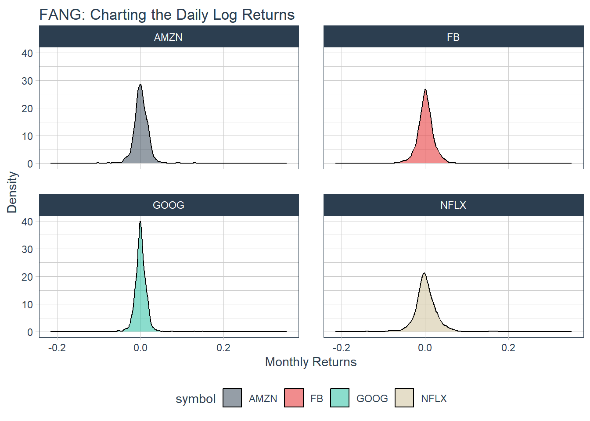

Capítulo4 Poder Cuantitativo en Acción
Revisaremos algunos ejemplos, para ello utilizaremos la base de datos FANG, de datos que consta de los precios de las acciones de FB, AMZN, NFLX y GOOG desde principios de 2013 hasta finales del 2016.
## # A tibble: 4,032 × 8
## symbol date open high low close volume adjusted
## <chr> <date> <dbl> <dbl> <dbl> <dbl> <dbl> <dbl>
## 1 FB 2013-01-02 27.4 28.2 27.4 28 69846400 28
## 2 FB 2013-01-03 27.9 28.5 27.6 27.8 63140600 27.8
## 3 FB 2013-01-04 28.0 28.9 27.8 28.8 72715400 28.8
## 4 FB 2013-01-07 28.7 29.8 28.6 29.4 83781800 29.4
## 5 FB 2013-01-08 29.5 29.6 28.9 29.1 45871300 29.1
## 6 FB 2013-01-09 29.7 30.6 29.5 30.6 104787700 30.6
## 7 FB 2013-01-10 30.6 31.5 30.3 31.3 95316400 31.3
## 8 FB 2013-01-11 31.3 32.0 31.1 31.7 89598000 31.7
## 9 FB 2013-01-14 32.1 32.2 30.6 31.0 98892800 31.0
## 10 FB 2013-01-15 30.6 31.7 29.9 30.1 173242600 30.1
## # ℹ 4,022 more rows4.1 Ejemplo 1: utilizar quantmod periodReturn para convertir precios en rentabilidad
La funcioón quantmod::periodReturn() genera retornos por periodicidad, para ello, revisemos algunos casos:
4.1.1 Ejemplo 1A: Obtener y registrar las rentabilidades anuales
Utilizamos la columna de precios de cierre ajustados (ajustada para divisiones de acciones, lo que puede hacer que parezca que una acción tiene un mal desempeño si se incluye una división).
Establecemos select = adjusted, investigamos la función periodReturn y descubrimos que acepta type = "arithmetic" y period = "yearly", que devuelve los rendimientos anuales.
FANG_annual_returns <- FANG %>%
group_by(symbol) %>%
tq_transmute(select = adjusted,
mutate_fun = periodReturn,
period = "yearly",
type = "arithmetic")
FANG_annual_returns## # A tibble: 16 × 3
## # Groups: symbol [4]
## symbol date yearly.returns
## <chr> <date> <dbl>
## 1 FB 2013-12-31 0.952
## 2 FB 2014-12-31 0.428
## 3 FB 2015-12-31 0.341
## 4 FB 2016-12-30 0.0993
## 5 AMZN 2013-12-31 0.550
## 6 AMZN 2014-12-31 -0.222
## 7 AMZN 2015-12-31 1.18
## 8 AMZN 2016-12-30 0.109
## 9 NFLX 2013-12-31 3.00
## 10 NFLX 2014-12-31 -0.0721
## 11 NFLX 2015-12-31 1.34
## 12 NFLX 2016-12-30 0.0824
## 13 GOOG 2013-12-31 0.550
## 14 GOOG 2014-12-31 -0.0597
## 15 GOOG 2015-12-31 0.442
## 16 GOOG 2016-12-30 0.0171Ahora, grafiquemos los redimientos anuales, a partir del uso rápido del paquete ggplot2:
FANG_annual_returns %>%
ggplot(aes(x = date, y = yearly.returns, fill = symbol)) +
geom_col() +
geom_hline(yintercept = 0, color = palette_light()[[1]]) +
scale_y_continuous(labels = scales::percent) +
labs(title = "FANG: Annual Returns",
subtitle = "Get annual returns quickly with tq_transmute!",
y = "Annual Returns", x = "") +
facet_wrap(~ symbol, ncol = 2, scales = "free_y") +
theme_tq() +
scale_fill_tq()
4.1.2 Ejemplo 1B: Obtener devoluciones de registros diarios
Los retornos de registros diarios siguen un enfoque similar. Normalmente se usa una función de transmutación tq_transmute porque la función periodReturn acepta diferentes opciones de periodicidad, y cualquier cosa que no sea diaria hará estallar una mutación.
Sin embargo, en nuestro ejemplo, la periodicidad de los rendimientos es la misma que la periodicidad de los precios de las accciones (ambas diarias), por lo que podemos usar cualquiera de las dos funciones mencionadas anterioremente.
Queremos utilizar la columna de precioes de cierre ajustados, para ello configuramos de manera similar al ejemplo anterior y obtenemos lo siguiente:
FANG_daily_log_returns <- FANG %>%
group_by(symbol) %>%
tq_transmute(select = adjusted,
mutate_fun = periodReturn,
period = "daily",
type = "log",
col_rename = "monthly.returns")Y la gráfica, obtenida a partir del paquete ggplot2, se verá de la siguiente manera:
FANG_daily_log_returns %>%
ggplot(aes(x = monthly.returns, fill = symbol)) +
geom_density(alpha = 0.5) +
labs(title = "FANG: Charting the Daily Log Returns",
x = "Monthly Returns", y = "Density") +
theme_tq() +
scale_fill_tq() +
facet_wrap(~ symbol, ncol = 2)
4.2 Ejemplo 2: utilice xts to.period para cambiar la periodicidad de diaria a mensual
La función xts::to.period se utiliza para convertir la periodicidad de un nivel inferior a un nivel superior (ej: meses a años). Dado que se busca una estructura que tenga una escala de tiempo diferente a la de entrada, se debe hacer una transformación. Utilizamos tq_transmute(), pasamos las columnas “open”, “high”, “low”, “close” y “volume”, y usamos el periodo “months”.
FANG |> group_by(symbol) |> tq_transmute(select = open:volume,
mutate_fun = to.period,
period = "months")## # A tibble: 192 × 7
## # Groups: symbol [4]
## symbol date open high low close volume
## <chr> <date> <dbl> <dbl> <dbl> <dbl> <dbl>
## 1 FB 2013-01-31 29.2 31.5 28.7 31.0 190744900
## 2 FB 2013-02-28 26.8 27.3 26.3 27.2 83027800
## 3 FB 2013-03-28 26.1 26.2 25.5 25.6 28585700
## 4 FB 2013-04-30 27.1 27.8 27.0 27.8 36245700
## 5 FB 2013-05-31 24.6 25.0 24.3 24.4 35925000
## 6 FB 2013-06-28 24.7 25.0 24.4 24.9 96778900
## 7 FB 2013-07-31 38.0 38.3 36.3 36.8 154828700
## 8 FB 2013-08-30 42.0 42.3 41.1 41.3 67735100
## 9 FB 2013-09-30 50.1 51.6 49.8 50.2 100095000
## 10 FB 2013-10-31 47.2 52 46.5 50.2 248809000
## # ℹ 182 more rowsPodemos comparar la visualización gráfica agrupando y sin agrupas:
Sin agregración de periodicidad
FANG_diario <- FANG |> group_by(symbol)
FANG_diario |> ggplot(aes(x=date, y=adjusted, color = symbol))+
geom_line(linewidth = 1) +
labs(title = "Precio diario de acciones",
x = "", y = "Precios ajustados", color = "")+
facet_wrap(~ symbol, ncol = 2, scales = "free_y")+
scale_y_continuous(labels = scales::dollar)+
theme_tq()+
scale_color_tq()
Con agregación de periodicidad mensual
FANG_mensual <- FANG |> group_by(symbol) |> tq_transmute(select = adjusted,
mutate_fun = to.period,
period = "months")
FANG_mensual |> ggplot(aes(x = date, y = adjusted, color = symbol)) +
geom_line(linewidth = 1) + labs(title = "Monthly Stock Prices", x = "", y = "Adjusted Prices", color = "") +
facet_wrap(~ symbol, ncol = 2, scales = "free_y") + scale_y_continuous(labels = scales::dollar) +
theme_tq() + scale_color_tq() Con esto se reduce la cantidad de puntos y el gráfico de la serie temporal se suaviza.
Con esto se reduce la cantidad de puntos y el gráfico de la serie temporal se suaviza.
4.3 Ejemplo 3: utilice TTR runCor para visualizar correlaciones continuas de rendimientos
Las correlaciones de rendimiento son una forma para analizar la medida en que un activo imita un índice de referencia. Utilizaremos los datos de FANG como los datos y la línea de base será el sector tecnológico “XLK”, para ello se recupera los precios utilizando tq_get, y los rendimientos se calculan a partir de los precios ajustados del Ejemplo 1
#Rendimientos
FANG_rend_mensual <- FANG |> group_by(symbol) |>
tq_transmute(select = adjusted,
mutate_fun = periodReturn,
period = "monthly")
#Valor base de Rendimientos de referencia
base_rend_mensual <- "XLK" |> tq_get(get = "stock.prices",
from = "2013-01-01",
to = "2016-12-31") |>
tq_transmute(select = adjusted,
mutate_fun = periodReturn,
period = "monthly")
#Unir
rends <- left_join(FANG_rend_mensual, base_rend_mensual, by="date")
rends## # A tibble: 192 × 4
## # Groups: symbol [4]
## symbol date monthly.returns.x monthly.returns.y
## <chr> <date> <dbl> <dbl>
## 1 FB 2013-01-31 0.106 -0.0138
## 2 FB 2013-02-28 -0.120 0.00782
## 3 FB 2013-03-28 -0.0613 0.0258
## 4 FB 2013-04-30 0.0856 0.0175
## 5 FB 2013-05-31 -0.123 0.0279
## 6 FB 2013-06-28 0.0218 -0.0289
## 7 FB 2013-07-31 0.479 0.0373
## 8 FB 2013-08-30 0.122 -0.0104
## 9 FB 2013-09-30 0.217 0.0253
## 10 FB 2013-10-31 -0.000398 0.0502
## # ℹ 182 more rowsLa función runCor se puede utilizar para evaluar correlaciones rodantes, además se puede incluir el ancho de la correlación que en este caso utilizaremos seis al estar en una escala mensual. Se utilizará tq_transmute_xy para realizar esto:
FANG_corr <- rends |> tq_transmute_xy(x = monthly.returns.x,
y = monthly.returns.y,
mutate_fun = runCor,
n = 6,
col_rename = "corr_6")
#Grafico
FANG_corr |> ggplot(aes(x = date, y = corr_6, color = symbol))+
geom_hline(yintercept = 0, color = palette_light()[[1]])+
geom_line(size = 1)+
labs(title = "FANG: Correlación 6 meses a XLK", x="", y="Correlation",color="")+
facet_wrap(~symbol,ncol=2)+
theme_tq()+scale_color_tq()